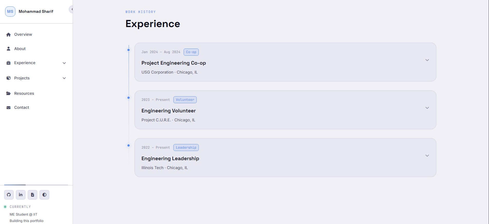
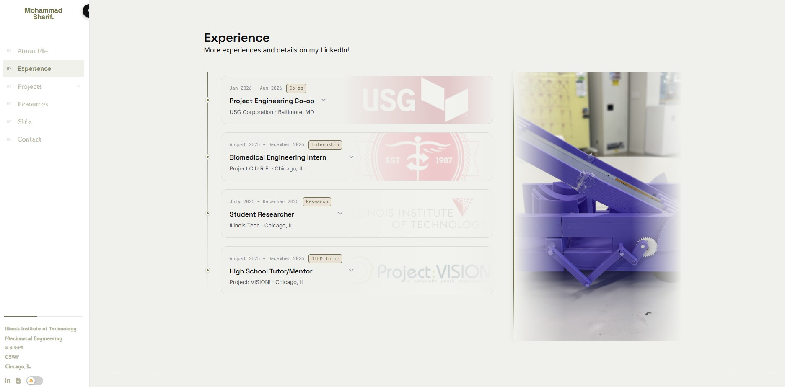

Portfolio Website
A handcrafted engineering portfolio built from scratch with vanilla HTML, CSS, and JavaScript — no frameworks

Initial design iteration

Current production design
Overview
This portfolio was designed and built entirely from scratch as a personal engineering project. The goal was to create a high-end, production-quality website that reflects both technical depth and design sensibility — without relying on any JavaScript frameworks, CSS libraries, or templates.
The site features a fixed sidebar navigation with dynamic accent color extraction from the hero headshot, immersive split-layout experience and project sections, a fullscreen lightbox gallery, a document viewer modal, and full iOS/Android compatibility — all in vanilla HTML, CSS, and JavaScript.
Design Process
The design evolved through multiple iterations informed by references from Awwwards, Apple, and Tesla. Key decisions included inverting the traditional image/text relationship in the experience and projects sections — making images the dominant visual element with text overlaid in glassmorphism panels — and building a color system that automatically extracts dominant hues from the hero photo to theme the entire site dynamically.
- Designed the layout system around a fixed sidebar and full-width scrolling content area, with automatic collapse behavior at tablet widths
- Built a custom canvas-based color extraction algorithm that reads the headshot and maps dominant hues to CSS custom properties sitewide
- Implemented a reusable lightbox gallery with auto-discovery of numbered image files — no HTML edits needed to add photos
- Created a document viewer modal with iframe embedding, download button, and keyboard/touch dismiss support
- Tuned all animations to use only transform and opacity — GPU-composited, no layout thrash, 60fps on mobile
Results & Lessons Learned
The finished site achieves a premium engineering portfolio aesthetic while remaining fully maintainable without a build system. Adding a new project requires creating one HTML file and dropping images into a naming convention — no framework knowledge needed.
- Learned that CSS custom properties + a single canvas color-extraction pass can replace entire theming libraries
- Discovered that
IntersectionObserverwith multiple thresholds eliminates scroll-event polling entirely for both reveal animations and active nav highlighting - Sidebar responsive behavior required careful coordination between CSS media queries and JavaScript guards to prevent conflicting state at breakpoint edges
- The most impactful design decision was treating images as background elements rather than content — it immediately elevated the aesthetic from template to editorial